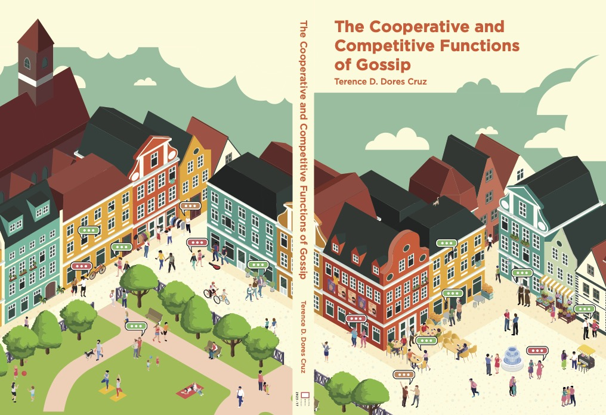
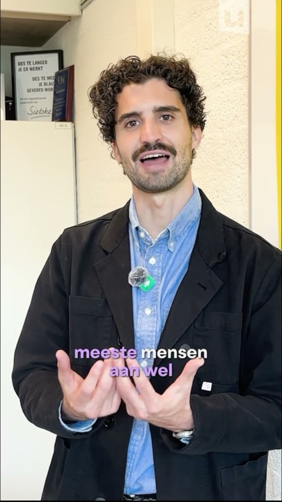

Biography
Terence D. Dores Cruz is a Postdoctoral Researcher at the Department of Social Psychology at the Vrije Universiteit Amsterdam. Terence currently studies how sanctions and communication shape cooperation, trust, and resilience in crisis situations within the ADAPT! Consortium. Terence is also a member of the Scientific Committee of the Kurt Lewin Institute.
Terence's main research interests are human cooperation (and non-cooperation) in (crisis) situations where self-interest and collective interests collide. He focuses on how cooperative behavior with humans and machines is shaped by reputation, social rewards, social punishments, recommendations, feedback, and other types of social and non-social information that humans and machines provide. Terence takes an interdisciplinary approach building on evolutionary, social, moral, and economic psychology employing interactive experiments, vignettes, surveys, experience sampling, and diary studies to answer questions about decision-making in the domain of cooperation, ethics, and crisis responses.
Previously, Terence was a Postdoctoral Researcher at the Behavioral Ethics Lab at the Universiteit van Amsterdam, where he studied human oversight and human-AI cooperation. In 2024, Terence completed his PhD in the FORCE-OF-GOSSIP group at the Vrije Universiteit Amsterdam, where he studied the cooperative and competitive functions of gossip. During his PhD, Terence was also the student-representative for the Kurt Lewin Institute. Terence further holds a research master's degree from the Vrije Universiteit Amsterdam (Amsterdam Cooperation Lab) and bachelor's degree from the Vrije Universiteit Amsterdam.
Interests
- Human Cooperation
- Human-AI Cooperation
- Reputation & Social Information
- Crisis Responses and Resilience
- Unethical Behavior
- Human Oversight of AI
- Reciprocity
- Social Norms & Social Evaluation
Featured Publication
Read all about gossip in my thesis!

Featured Media
Hear about my new research on small talk in 1 minute.

Universiteit van Nederland (2026). Van een praatje word je gelukkiger. [YouTube Short, in Dutch].